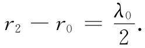
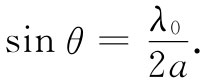
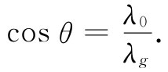
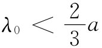

现在要让你看看另一种理解波导行为的方法，即为什么波导对比其截止频率ωc 低的那些频率会使场迅速衰减。这样对于波导在高、低频之间行为之所以会突然变化，你将有一个更为“形象化”的概念。对于一个矩形波导来说，通过利用在导管壁上的反射或镜像法对场的分析，我们能够做到这点。然而，这种办法只对矩形波导有效，这就是为什么我们要从较多数学上的分析开始，因为它在原则上对任何形状的波导都适用。
对于上面已描述过的模，垂直方向的尺寸大小（即y值）不会引起任何效应，因而可略去该导管的顶和底，并想象导管乃是在垂直方向上延伸至无限远的。于是，可设想导管仅由两块相距为a的垂直板组成。
假定场源是一根放在导管中间的垂直方向的导线，这根线中载有以频率ω振动着的电流。在不存在导管壁的情况下，像这样的导线会辐射出柱面波。
现在，考虑导管壁都是理想导体。这样，如同在静电学中一样，若我们对于该导线的场再加上一个或更多个适当的镜像导线的场，则在壁面处的那些条件将是正确的。关于镜像的概念，在电动力学中，正如同在静电学中一样，也都适用，当然要把推迟效应也包括进去。我们都明白那是真的，因为经常见到镜子会产生光源的像。而对于光频波段的电磁波来说，一面镜子正好是一块“理想”导体。
图24-15 放在两面导体壁W1 和W2 之间的线源S0 。这两面壁可以由一个无穷序列的像源代替
现在让我们取一个水平截面，如图24-15所示，其中W1 和W2 是导管的两个壁，而S0 则是那根源导线。我们称这根导线里的电流方向为正。现在假如仅有一面壁，比方说W1 ，我们可以把它除去，只要在那标明为S1 的地方放置一个（具有相反极性的）像源。但由于存在两面壁，所以在壁W2 中也将有S0 的像，将其标明为像S2 。这个像源也将在W1 中造成一个像，叫它做S3 。现在S1 和S3 两者都将在W2 中在标明为S4 和S6 的位置上各有其像，如此等等。对于中间有一个源的两个平面导体来说，其场与由排列成一条直线、彼此相隔各为a的无限多个源所产生的场相同（这事实上就恰如你在观察置于两平行平面镜中间的一根线时所会看到 的那样）。为了使在两壁处的场为零，在像上的那些电流极性必须从一个像至另一个像交替地改变着。换句话说，它们的振动存在180°的相位差。于是，该波导场就恰好是这种无限多个线源产生的场的叠加。
如果靠近那些源，场就很像是个静场。在§7-5中曾经考虑过由一排栅形线源所产生的静场，并求得除随着与栅的距离指数式地减弱的那些项外，这个场好像一块带电平板产生的场。这里平均源强为零，因为从一个源至下一个源的符号交替地改变。任何存在的场会随距离做指数式的减弱。在靠近源时，所见到的场主要是来自最接近的源，在较远处，许多源都会做出贡献，因而它们的平均效果便是零了。因此，现在我们明白为什么在低于其截止频率时波导会给出一个按指数衰弱的场。特别是在低频上，这静态近似表现得很好，因而它预言场会随距离的增大而迅速减弱。
现在，我们却面临一个相反问题：为什么波真的会传播呢？那是个神秘部分！原因是，在高频时场的推迟会在相位上引进一个附加改变，使得来自那些异相的源的场相长而不是相消。事实上，正是为了这一问题，我们在第1卷第29章中已学习过由一个天线阵或一个光栅所产生的场，当几根无线电天线被适当排列时，它们就能提供一种干涉花样，使得在某一方向有强信号而在另一方向则没有信号。
假设回到图24-15并观察从那一列像源到达远处的场。只有在某些由频率决定的方向——只有在来自所有一切源的场因同相相加的那些方向——场才会最强。在与源有适当距离处，场在这些特殊方向才作为平面波传播。我们在图24-16中对这一种波画出了示意图，其中实线代表波峰而虚线表示波谷。波的传播方向将是这样的一个方向，在这个方向两相邻源到达波峰的推迟时差等于半个振动周期。换句话说，图中的r2 与r0 之差是自由空间波长的一半：

于是角度θ就由下式给出：
 （24.33）
图24-16 来自一列线源的一组相干波
当然，还有另一组波以相对于该列线源对称的角度向下传播。整个波导场（不要太靠近源）就是这两组波的叠加，如图24-17所示。当然，只有在该波导的两壁之间那实际的场才会真的是这样。
图24-17 波导场可以视作两列平面波的叠加
比如在A和C那些点，两种波形的峰相重合，因而场就有一个极大值；比如在B那种点，两波都有负峰值，因而场会有一个极小值（最大负值）。当时间向前推移时，导管里的场会表现出以波长λg ——等于从A至C的距离——沿导管传播。这一距离与θ角的关系为
 （24.34）
利用关于θ的式（24.33），便可得到
这恰好就是上面我们在式（24.19）中所求得的。
现在明白了为什么只有在超过截频ω0 时才会有波传播。如果自由空间波长大于2a，则波不能在如图24-16所示的那种角度出现。当λ0 降至2a以下或当ω升至ω0 =πc/a以上时，所需的相长干涉才会突然出现。
若频率足够高，则波将出现的方向就可能有两个或更多个。如果 ，则上述情况就会发生。然而，一般说来，这也可能发生在λ0 ＜a时。这些附加波相当于我们提到过的那些较高的波导模。
通过上述分析我们也已弄清楚为什么导波的相速度会大于c，以及为什么这一速度会依赖于ω。当ω改变时，图24-16中的自由波角度会跟着发生变化，从而沿导管的速度也就变了。
虽然已经把导波描写成无限多个线源的阵列之场的叠加，但是只要设想有两组自由空间的波在两面理想平面镜之间不断地被往复反射——记住反射意味着周相的反转——我们便会得到这相同的结果。这些反射波组，除非刚好按照式（24.33）所给出的那个角度θ在传播，否则彼此完全互相抵消。因此考虑同一事物存在着许多方法。
[1] 这里“波节”指的是行波中的波谷（或波峰），而不是驻波中的那种波节。——译者注